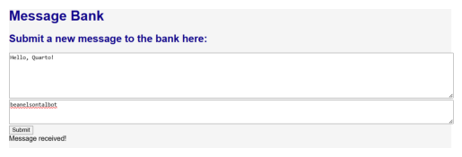
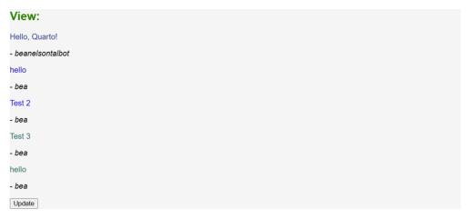

import os
import sqlite3
import random
import pandas as pd
import plotly.express as px
from dash import Dash, html, dash_table, dcc, callback, Output, Input, State
from textwrap import dedent #for formattingToday we’re making a message bank to practice web development using Dash. Let’s import the necessary packages first. We’ll also use SQLite to store the messages in a database.
Defining Functions
get_message_db()
This function checks to see if a database called ‘messages_db.sqlite’ exists, and, if not, creates a new one. It then returns the connection as a variable called message_db.
def get_message_db():
"""
checks if there is already a messages database; if not then it creates one.
returns connection to the database as variable named message_db
"""
global message_db
if os.path.isfile('messages_db.sqlite'):
return sqlite3.connect('messages_db.sqlite')
else:
message_db = sqlite3.connect("messages_db.sqlite", check_same_thread=False)
cursor = message_db.cursor()
cursor.execute('''CREATE TABLE IF NOT EXISTS messages (
handle TEXT,
message TEXT);''')
return message_dbinsert_message(handle, message)
This function takes a user’s handle and message that they enter into the message bank and inserts it into our database.
def insert_message(handle, message):
"""
inserts a message and handle into the messages database
returns none
"""
with get_message_db() as conn:
cursor = conn.cursor()
cmd = f"""INSERT INTO messages (handle, message)
VALUES ('{handle}', '{message}');"""
cursor.execute(cmd)
conn.commit()random_messages(n)
This function returns n random messages from the message bank.
def random_messages(n):
with get_message_db() as conn:
cursor = conn.cursor()
cursor.execute('SELECT MAX(rowid) FROM messages')
length = cursor.fetchone()
mylist = [x for x in range(1, length[0] + 1)]
randoms = tuple(random.sample(mylist, n))
messages = []
for x in randoms:
cursor.execute(f'SELECT handle, message FROM messages WHERE rowid = {x};')
messages.append(cursor.fetchone())
return messagesMaking the App
Initializing the App and Variables
# Initialize the app
app = Dash()
markdown_text1 = '''
# Message Bank
## Submit a new message to the bank here:
'''
markdown_text2 = '''
## View:
'''
bank = []App Layout
app.layout = html.Div(children=[
dcc.Markdown(children=markdown_text1, style={'color':'darkblue'}),
dcc.Textarea(
id='message-input',
placeholder='Message',
style={'width': '100%', 'height': 100},
),
dcc.Textarea(
id='name-input',
placeholder='Name/Handle',
style={'width': '100%', 'height': 50},
),
html.Button('Submit', id='submit-button', n_clicks=0),
html.Div(id='message-output', style={'whiteSpace': 'pre-line'}),
dcc.Markdown(children=markdown_text2, style={'color':'green'}),
dcc.Markdown(id='random-messages', dangerously_allow_html = True),
html.Button('Update', id='update-button', n_clicks=0)
], style={'backgroundColor':'#F5F5F5', 'fontFamily':'sans-serif'})Note that the app layout is comprised of html elements and dcc (dash core component) elements. We use dcc to render Markdown text.
Callback Functions
These functions are how we update components based on user interaction. The @callback is a special wrapper for the function that specifies which components to consider and which to alter.
submit()
The submit() function is what allows users’ messages and handles to be added to the bank. The @callback wrapper tells the function that the Input is the number of clicks on the Submit button (this is what makes it update when the user clicks the Submit button). The State elements are similar to arguments for the function - this is what enables it to extract the user’s message and handle from the textarea elements where they type them in. Finally, the Output element is what the function is updating: here it is printing “Message received!”
@callback(
Output('message-output', 'children'),
Input('submit-button', 'n_clicks'),
State('message-input', 'value'),
State('name-input', 'value')
)
def submit(n_clicks, message, handle):
if n_clicks > 0:
insert_message(handle, message)
return 'Message received!'view()
The view() function is what displays and updates the quotes underneath. The Input is the same as in submit(), so that the quotes are updated upon the user clicking the Update button. The Output is changing the children of the dcc component with id ‘random-messages’, which to the user looks like the quotes being updated.
@callback(
Output('random-messages', 'children'),
Input('update-button', 'n_clicks')
)
def view(n_clicks):
messages = random_messages(5)
display = ''''''
rainbow = ['#15317E', '#0000A5', '#0000CD', '#045F5F', '#006A4E']
for x in range(5):
display += f'''
<span style="color:{rainbow[x]}" children="{messages[x][1]}" />
- *{messages[x][0]}*
'''
return dedent(display)Running the App
Finally, we are ready to run our app!
if __name__ == '__main__':
app.run(debug=True)Results
Here is what it should look like when a user submits a message:
import matplotlib.pyplot as plt
import matplotlib.image as mpimg
img = mpimg.imread('message_submission.png')
imgplot = plt.imshow(img)
plt.axis('off')
plt.show()
And here is what it should look like when a user updates the message display:
img = mpimg.imread('messages_display.png')
imgplot = plt.imshow(img)
plt.axis('off')
plt.show()